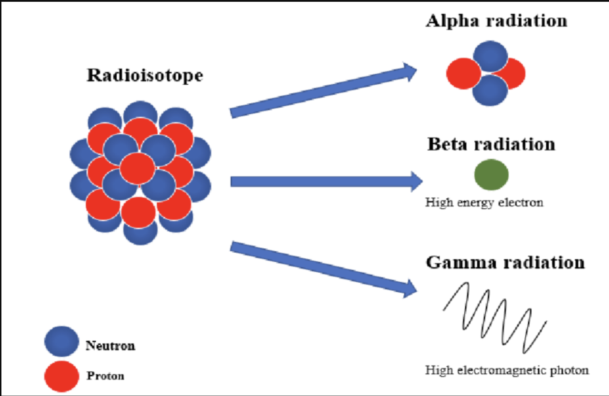

Select the color that you want the text to be:
The seeds that are implemented into the patient, either by ingestion, implantation, or insertion, are actually . The Curies found the first radioisotope to be used in medicine (Ra226) in 1898 and due to radium’s scarcity, there was great demand for the isotope. While radium is one of three naturally occurring , there are over 1000 artificially made isotopes which were created by elements interacting with different . The decay in these radioisotopes is caused by a high number of within an atom being pushed away from each other due to high , emitting particles and causing the phenomenon known as decay. Decay can occur in four different types:
Quiz time! Quarks are another type of subamtomic partcle that make up protons. So, the types of radiactive decay they are most likely to emitt is (look at the image):

In the case of prostate cancer, there are three isotopes that are commonly used: iodine-125, palladium-103, and cesium-131, each with their own and average energies. While there are a wide variety of reasons to use alternative isotopes (i.e., allergies), there are more advantages to choosing an isotope with a shorter half-life:
Want to calculate the amount of decay that occured over a period of time for palladium 103? Simply enter a number below and i'll output the amount of activivy in Curies
Quiz time! Iodine-125 has a half-life of 60 days, palladium-103 has a half-life of 17 days, and cesium-131 has a half life of about 10 days. Based purley off this information, what isotope would be the best candidate for brachytherapy seeds.